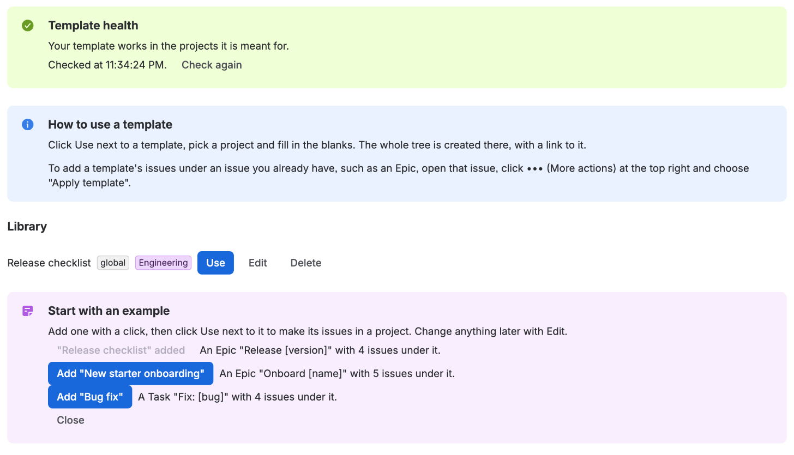
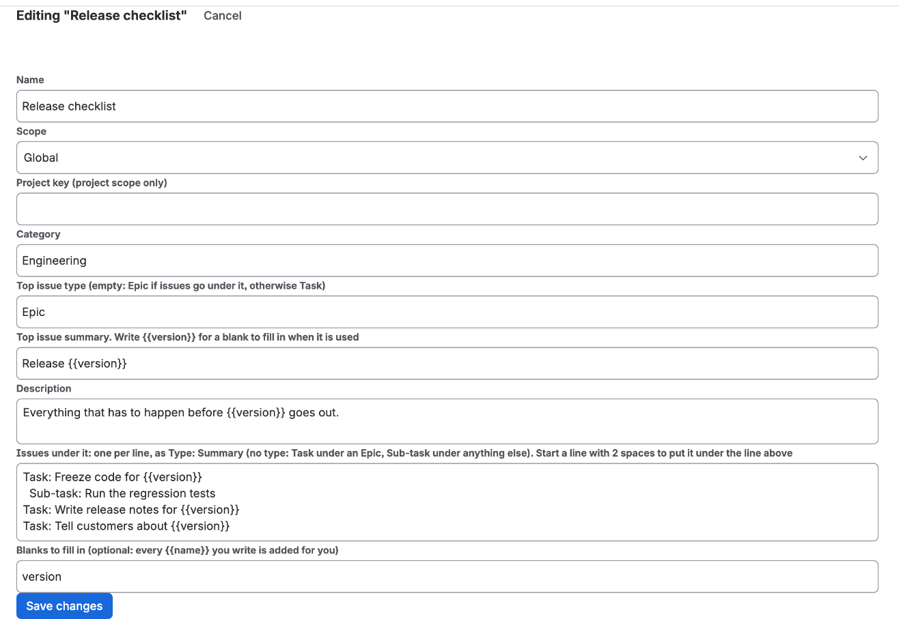
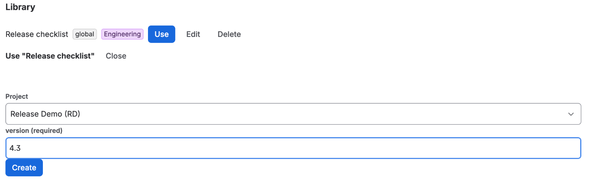
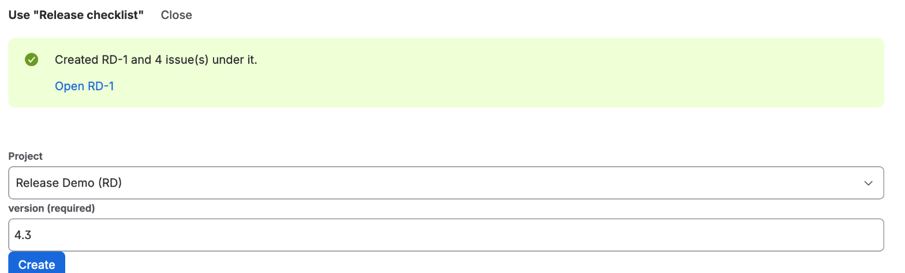
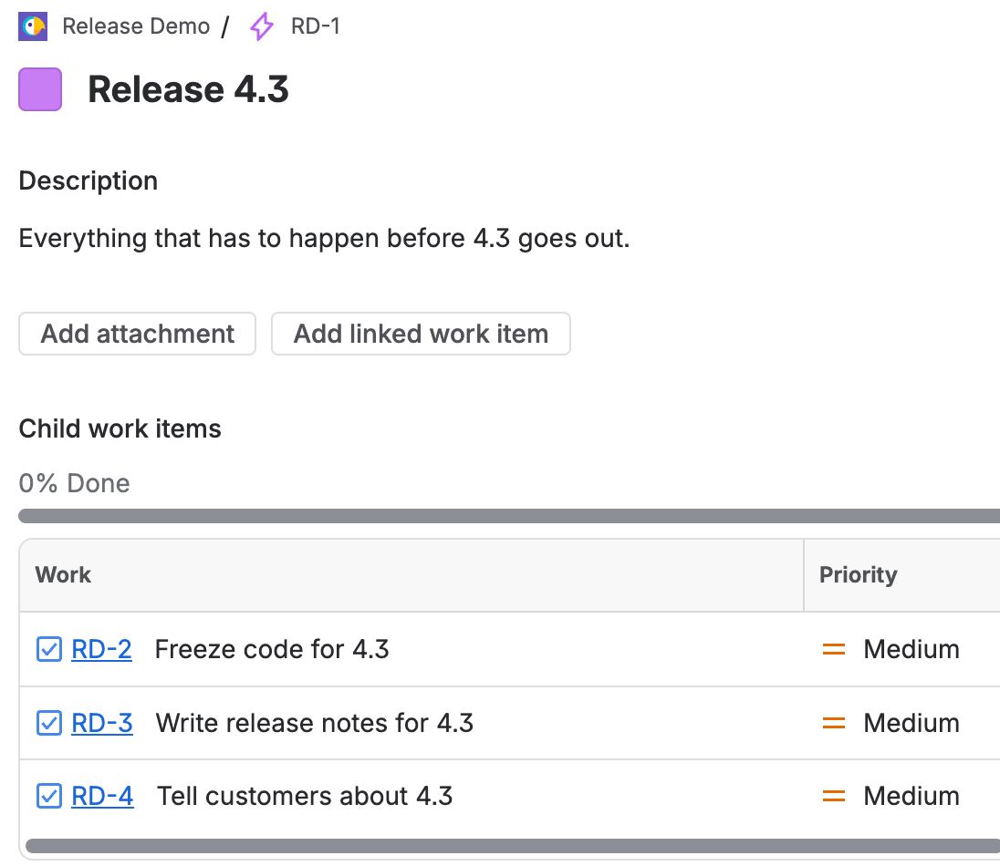
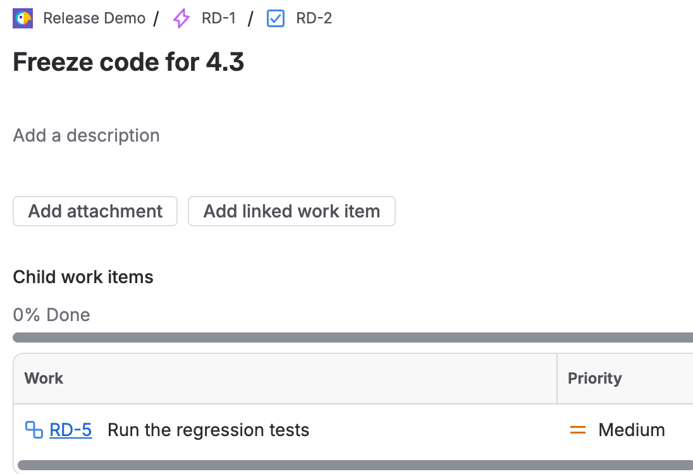

This page shows a release checklist becoming a reusable template. Then it shows the template creating a real Epic in Jira, with its tasks and a sub-task.
The screenshots come from our own Jira test site, in a project called "Release Demo". They are not from a customer. They were taken on 23 November 2026 with the app version on the Atlassian Marketplace at the time (3.14.0).
Open Apps → Issue Templates in Jira. Under Start with an example, add Release checklist. It appears in your Library.

Click Edit. The top issue is an Epic called Release {{version}}. Under it, write your checklist one item per line, as Type: Summary. Start a line with two spaces to put it under the line above.
{{version}} is a blank. You fill it in each time you use the template.

Click Use, pick the project and fill in the blank. Here the project is Release Demo and the version is 4.3.

Click Create. The app creates the Epic and the issues under it, and links to the Epic.

The Epic "Release 4.3" holds the three tasks, with 4.3 filled in.

The sub-task sits under "Freeze code for 4.3".

Open it, click ••• (More actions) at the top right and choose Apply template. The template's issues are added under that Epic.
Every apply is checked against the project before anything is created. If Jira still refuses a step partway through, the app removes the issues that run created where Jira permissions allow. An Epic, and any issue someone else added work under, is kept and named. Review the result for anything left. The documentation has the details.
Free for up to 10 users.
Questions: hello@aurumflux.co · How to make a Jira Epic template with sub-tasks